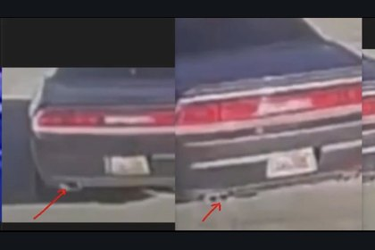
Rear exhaust side-by-side comparison frame1320 × 757 px
A two-panel rear view emphasizing the visible exhaust-area shapes beneath the bumper.
Thirty-four bundled original images covering known-vehicle views, surveillance frames, annotated comparisons, exhaust references, front-end references, glass/tint comparisons, and Utah license plate references.
OpenSeadragon 6.1.1 (BSD-3-Clause) powers the gallery's high-resolution zoom and pan viewer, with a bundled local fallback.

A two-panel rear view emphasizing the visible exhaust-area shapes beneath the bumper.
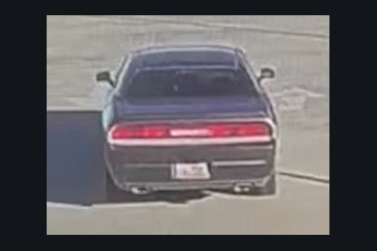
A low-resolution rear surveillance frame showing the taillight panel, plate area, spoiler, and lower bumper.
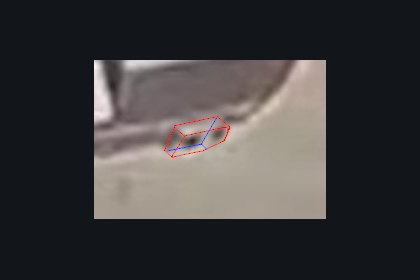
An annotated crop tracing the visible shape of a low-resolution exhaust-area feature.
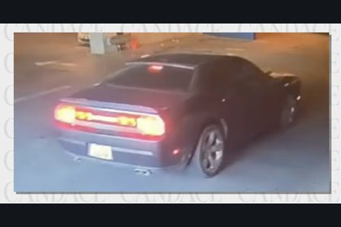
A garage surveillance view showing a gray Challenger from the rear three-quarter angle.
A road or surveillance rear view showing the taillight panel, plate area, spoiler, and lower bumper.
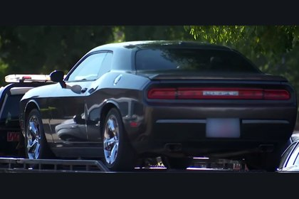
A known-vehicle photograph of the gray Challenger on a tow vehicle after seizure.
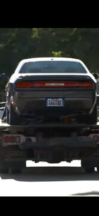
A rear tow-vehicle photograph that preserves the known car's plate area, taillights, bumper, and exhaust region.
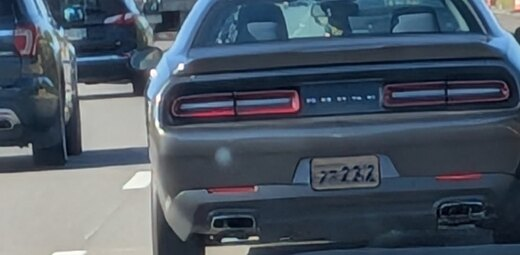
A rear-road photograph of another gray Challenger used as a visual comparison reference.
This set groups the strongest known-car and surveillance images for comparing side and rear glass appearance under different lighting conditions.
This bundled original is included as a vehicle-feature reference in the Challenger image archive.
This bundled original is included as a vehicle-feature reference in the Challenger image archive.
This bundled original is included as a vehicle-feature reference in the Challenger image archive.
This bundled original is included as a vehicle-feature reference in the Challenger image archive.
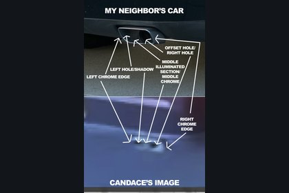
An annotated comparison mapping visible chrome edges, dark openings, and illuminated areas in two exhaust images.
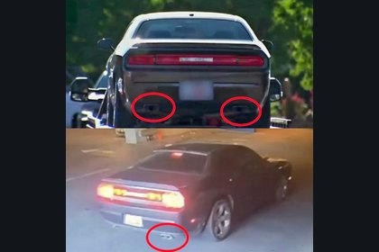
A direct comparison between the seized known vehicle and a surveillance Challenger focused on rear outlet appearance.
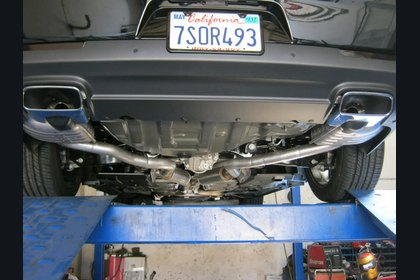
A reference underbody photograph showing dual exhaust routing, mufflers, and rectangular rear outlets.
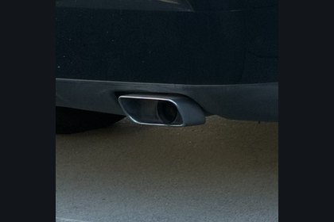
A close-up reference showing the internal pipe and shadow structure inside one rectangular exhaust outlet.
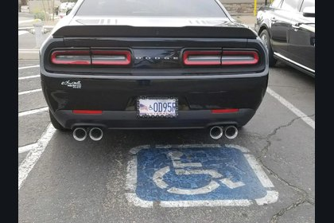
A reference image showing a later Challenger fitted with four round exhaust tips.
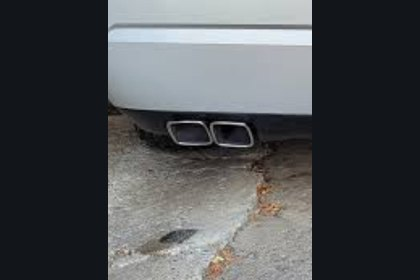
A reference image showing two rectangular exhaust openings grouped on one side of a vehicle.
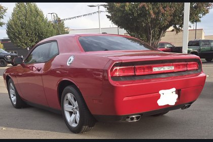
A rear three-quarter reference of an older-generation Challenger showing taillights, bumper, spoiler, and single rectangular outlet per side.
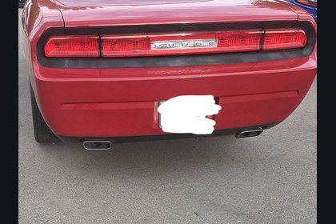
A straight rear reference of an older-generation Challenger showing the factory-style bumper and rectangular outlet placement.
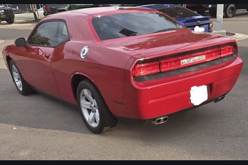
A rear three-quarter reference of an older-generation Challenger showing taillights, bumper, spoiler, and single rectangular outlet per side.
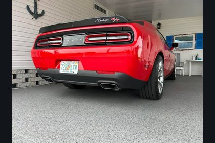
A Challenger T/A-style rear reference showing dark trim, spoiler treatment, and outlet placement.
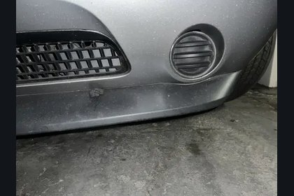
A close-up reference of lower front-bumper geometry and a circular opening beside the grille.
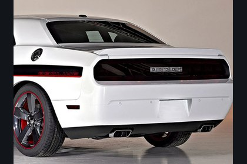
A white Challenger rear reference showing paired openings integrated into rectangular outlet surrounds.
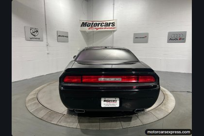
A black Challenger rear reference showing one rectangular outlet at each side of the lower bumper.
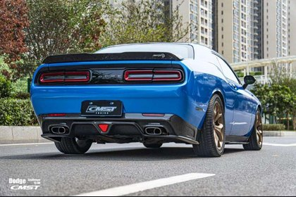
A modified Challenger reference showing a different diffuser design and rectangular rear outlets.
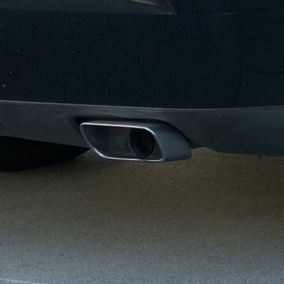
An additional close-up showing how one rectangular outer outlet can contain a visible internal pipe and deep shadow.
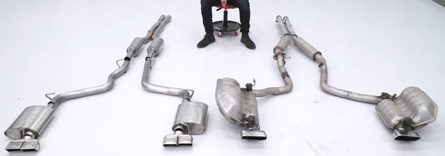
A side-by-side reference of multiple Challenger exhaust assemblies and outlet configurations laid out off the vehicle.
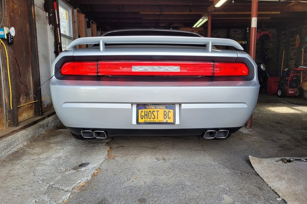
A straight-on rear reference showing two rectangular exhaust openings on each side under garage lighting.
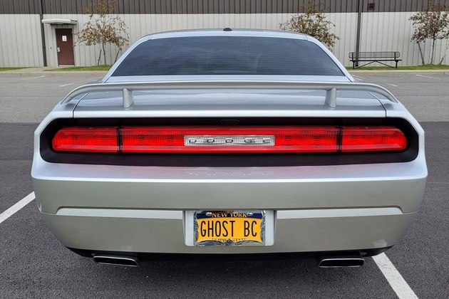
A daylight rear reference showing one wide rectangular exhaust outlet on each side.
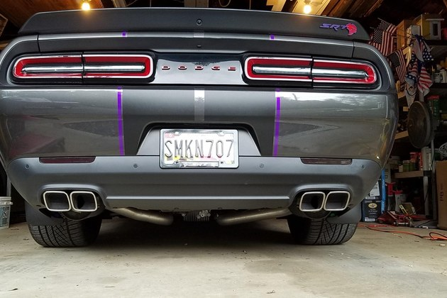
A low rear reference showing two rectangular exhaust openings grouped on each side.
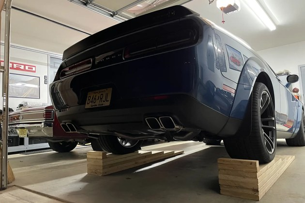
A low-angle rear reference emphasizing paired rectangular exhaust openings and underbody geometry.
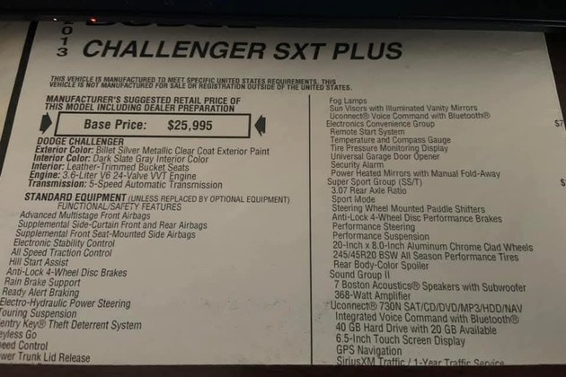
A photo of the 2013 Challenger SXT Plus window sticker showing package equipment including chrome clad wheels, the SS/T package, and the Uconnect 730N listing.
This set groups example Utah plate designs for quick visual comparison when reviewing plate color, layout, slogans, and overall pattern.
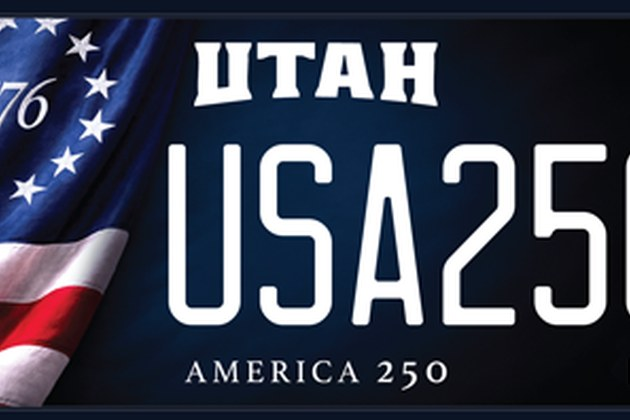
A Utah specialty plate design featuring the America 250 theme with a dark blue field and patriotic graphic.
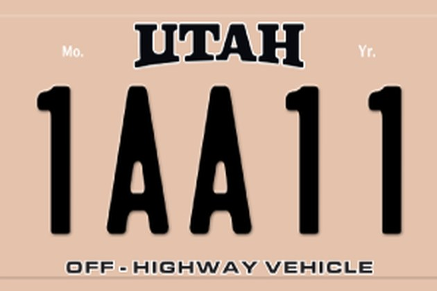
A tan Utah off-highway vehicle plate with the number format shown on a simplified plate background.
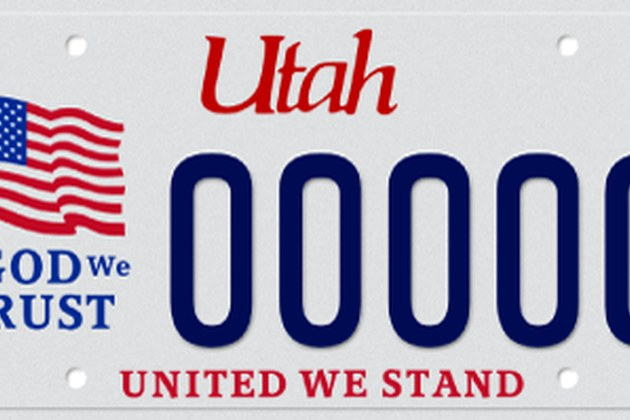
A Utah plate design with flag graphics, the phrase In God We Trust, and the line United We Stand.
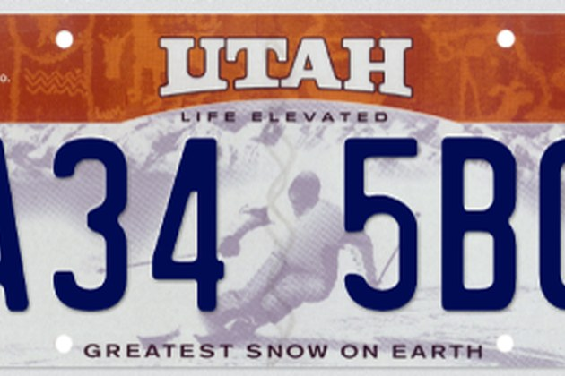
A Utah Life Elevated plate design with skier artwork and Greatest Snow on Earth text.
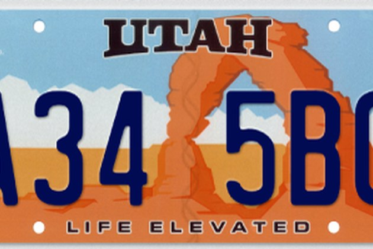
A Utah Life Elevated plate design with Delicate Arch artwork and the Life Elevated tagline.